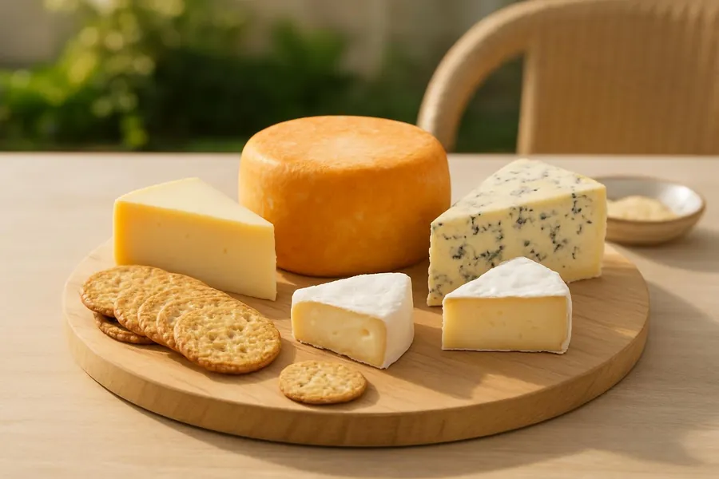
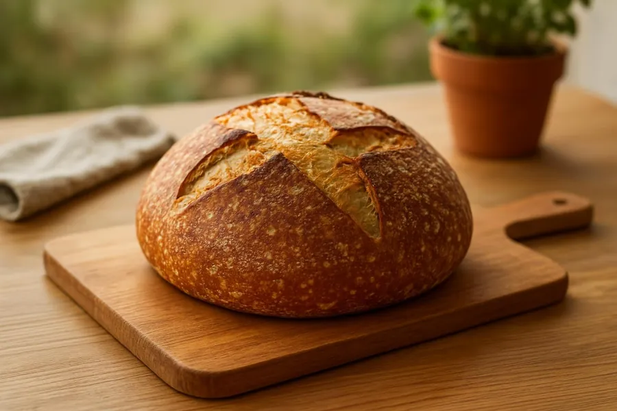
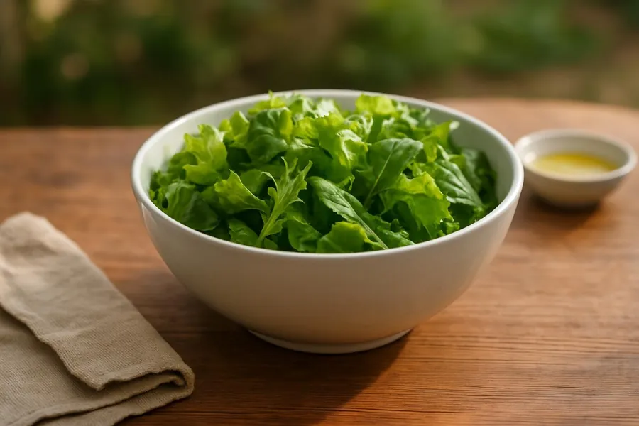
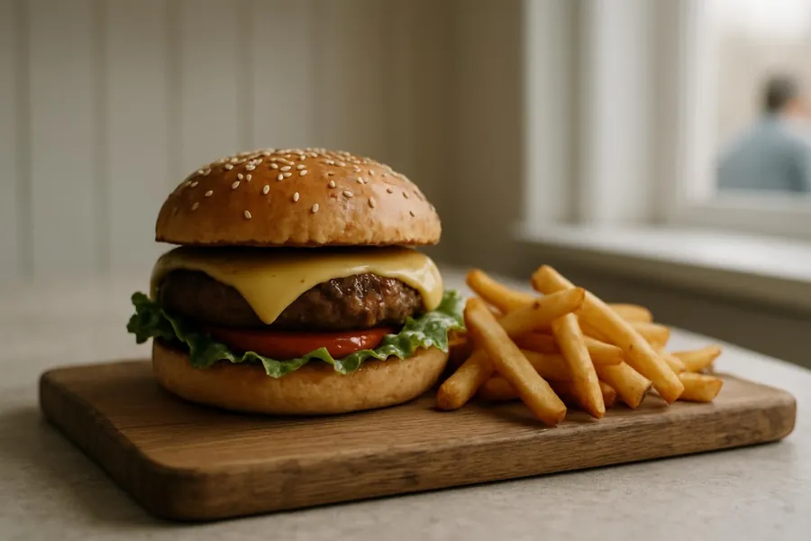
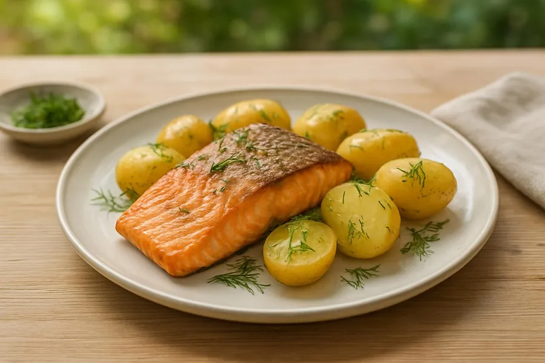
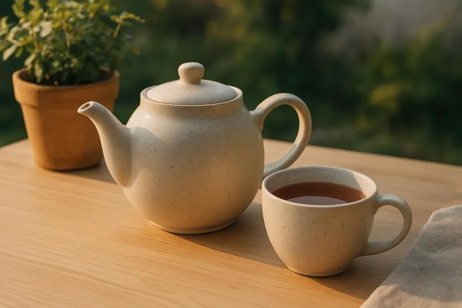
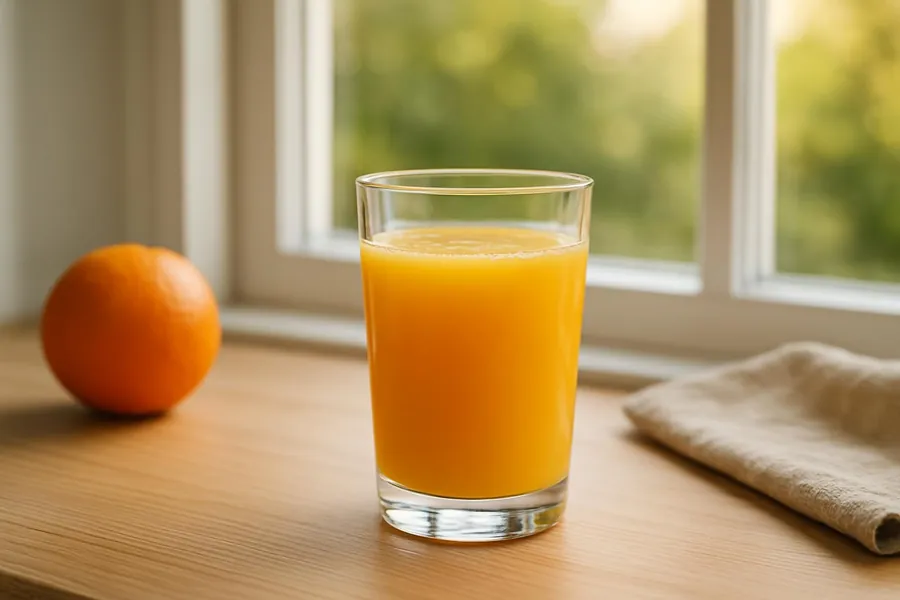
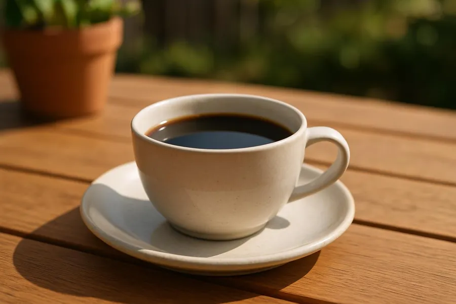
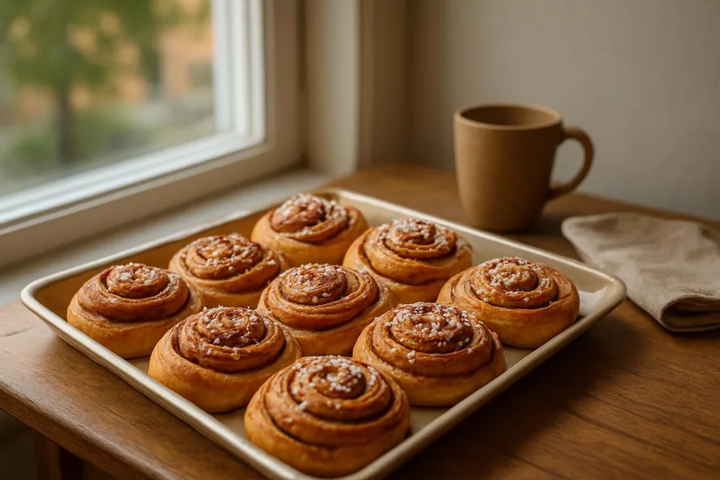
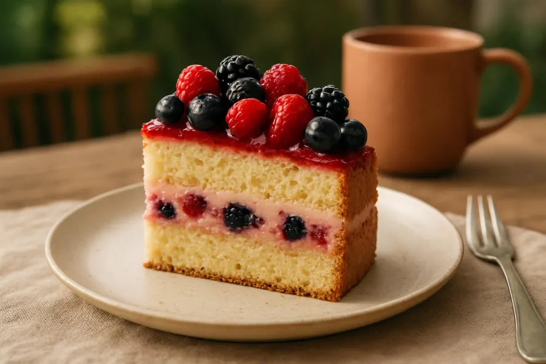

Order from the truck
Starters

Sold outCheese board
Three cheeses from island dairies, crackers and fig jam. We get a small batch each week, and when it is gone it is gone.
€12.00

Sourdough and butter
A thick slice of the day's sourdough from a bakery in town, with salted butter.
€4.00

Green salad
Mixed leaves, cucumber, green peas, radish and toasted sunflower seeds with a lemon and rapeseed oil dressing.
€9.00
Mains

Harbour burger
Beef burger with aged cheddar, our own pickles and mustard mayonnaise in a toasted bun, with fries. Ask if you want it without cheese.
€15.00

Salmon with dill potatoes
Pan-fried salmon, new potatoes tossed with dill, and a dill and lemon sauce on the side.
€17.00

Fish soup
Salmon, cod and shrimp in a creamy broth with dill and a little fennel, made fresh each morning. Served with a slice of sourdough and butter.
€14.50
Drinks

Tea
Black tea, or a herbal blend of mint and lemon balm, in a small pot for one.
€3.00

Orange juice
Freshly pressed at the truck, about four oranges to a glass.
€4.50

Coffee
Filter coffee, a medium roast. Milk or oat milk on request, and a free refill while you wait for your food.
€3.50
Sweets

Cinnamon bun
Baked in the morning with cardamom in the dough and pearl sugar on top. Most days they run out by two.
€4.00

Berry cake
A slice of the day's sponge cake with lingonberries and whipped cream.
€6.00